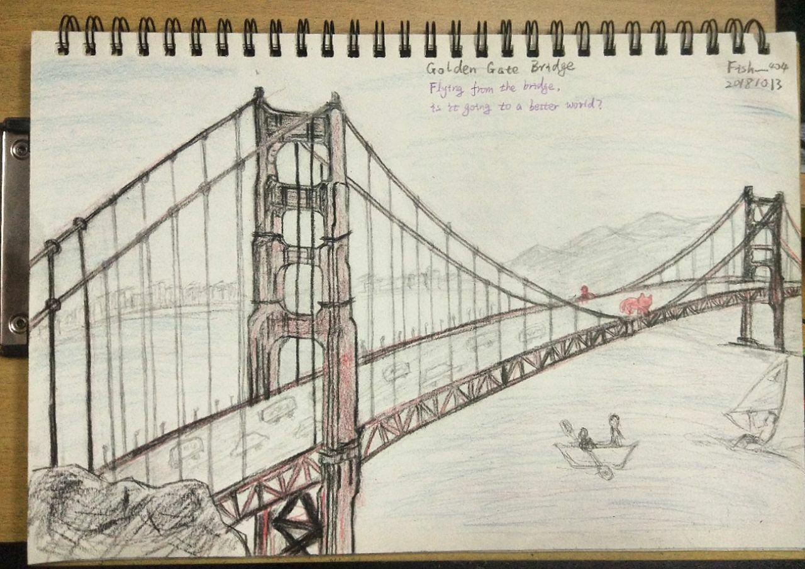

1 | 纪录片名称： 金门大桥(The Bridge) |
（观于10.8，写于10.9，码于10.14）
了解到金门大桥这部影片是在微信上看到了一篇关于自杀的推文，那篇文章很长，虽然不能说是认认真真地读，但终究是读完了它。恰逢国庆假期，于是就想一睹这部影片。
看这部影片是在从家返回学校的动车上。那天天气很晴，和这部影片似乎有那么点不搭，如果是阴雨天，窗外是云里雾里的池沼就完美了，我这样想着。不过后来，因为阳光刺眼，照进车厢里，晃得人睁不开眼，前座便把窗帘放了下来，于是，艳阳再与我无关。
可能是因为是部纪录片的缘故，又或者是为了配合这个略显严肃和沉重的主题，我觉着影片整体的节奏是有些缓慢的，因而略显拖沓。所以刚开始对影片并不抱有好感。然而及至看完整部影片，却几乎想要落泪，并不是因为感动，似乎也说不清是出于什么原因。用一个在《仿生人会梦见电子羊吗？》里的词语来说，可能是产生了共情吗？
影片里对于自杀者身边的人以及目击者的采访占据了很大的篇幅。大多数人都表示出不解，就像我无法理解他们为什么不解一样。人恶魔你似乎更倾向于对自杀者抱以一种几乎是嗤之以鼻的轻蔑。巧合的是，当天回到学校，傍晚似乎有学生想要自杀被发现，惊动了家长和学校，我对此事并不知情，但还是能听到些讨论。当听到身边的人的不解，甚至听到他们以一种有点戏谑和调侃的态度去揣测企图自杀的人，我几乎想冲过去打一架。以前也曾经听到过那么些自杀事件，也从《今日说法》看到过一些关于这个话题的报道和讨论。但最常听到的还是人们的不解和近乎事八卦一样的揣测。其实人们并不真的关心原因吧，却非要把他们的生前一点一滴地挖出来，像是考古发掘那样，一点点摆在展柜上摊开来。人们常常说他们事傻子。我不明白。是否也许在大多数人的字典里，自杀确实是一个讳莫如深的禁区，像是藏在博物馆里的文物，旁边还标识着「请勿触摸！」。我不知道这些脸上写着轻蔑的人们在学校曾经展开心理调查和测试的时候被问到是否产生过自杀念头这个问题的时候是不是选择了否，而心里的答案又是否是「否」，做出选择之前，有没有一点犹豫。想必大多数人还是多多少少有过这样的感受吧？如果是这样，那么他们的心情难道我们完全没有一点点理解吗？为何总固执地以生者的姿态去妄图揣测逝者的灵魂呢？
据统计，有两百多人因这部影片而放弃了自杀的念头，但也有三个人因为这部影片而选择了自杀，当然，两者都可能更多。人们对它褒贬不一。我并不觉得它做错了什么。说句可能成为众矢之的的话，谁也不能说活着是不是比死去更值得期待，毕竟，有成千上亿的人可以告诉你活着可以做出的千万种选择和变化，却没有人能告诉你死后的世界。影片里拍摄了两个跳桥的瞬间，我不知道摄制组是如何捕捉到这个瞬间的，还是这是像电影那样有一定的加工，但那个长发男子的纵身一跃看起来更像是一场表演，像是做了一个精彩的谢幕，以大桥为舞台。只是一去不复返，不再登场了。影片里的大桥看起来确实很美，很迷人，我以为从案例跳下应该是比跳楼要来的迷人得多的，脚下是亦刚亦柔的水。若尸体未被打捞，兴许还能给海里的鱼一顿饱餐，而不是血肉模糊地凝固在几张案发现场的照片和几篇未知善恶的报道里。
我从未想明白过生的意义，也总是思考过自杀这件事。正好读到这几句诗，也许可以对我的心情稍作描绘：
另一些时候，
活着是件怪事，
怎么都不能自圆其说，
不能和谐，不能自在。
我是我自己的异物，
或者污秽。
逃不出去，
也剔不干净。
（节选自刘天昭《秋天》）
在那篇推文中，记得似乎有这样一个问题，如果给自己想自杀这个念头打分，满分是十分，会给自己打上几分，我想于我而言，可能会是八分为常态，有时也许会蹦跶到九分，有时也许会缓和到七分，但不会更低了。有时抬头看天，会想，云的那一头，也许真的有另一个世界呢。站在那745英尺的大桥上，是不是也会觉得脚下会有另一个世界。我不曾去过那里，我不知道。如果要说影片带给我的意义，也许是终于知道，原来，当人们以自杀的方式谢幕自己的人生时，身边的人会有怎样的看法，而这些看法又让我有些难受，我不能理解，一如他们无法理解会想自杀这件事一样。
看完影片，趴在动车的座位上，想了很多，凌乱的想法错综复杂地交织在一起，犹豫之后还是写了下来，在一个本该读着概率论的下午，坐在图书馆略有些寒冷的冷气里，听着 Beethoven‘s Silence，数次停笔，打着寒颤，写得有点想哭，只想蜷缩着被冻在与世隔绝的冰块里，思考死亡是否美好，跳桥是否优雅，自杀是否有罪，何时我会谢幕？
从桥上一跃而下，是去往了一个更好的世界吗？
